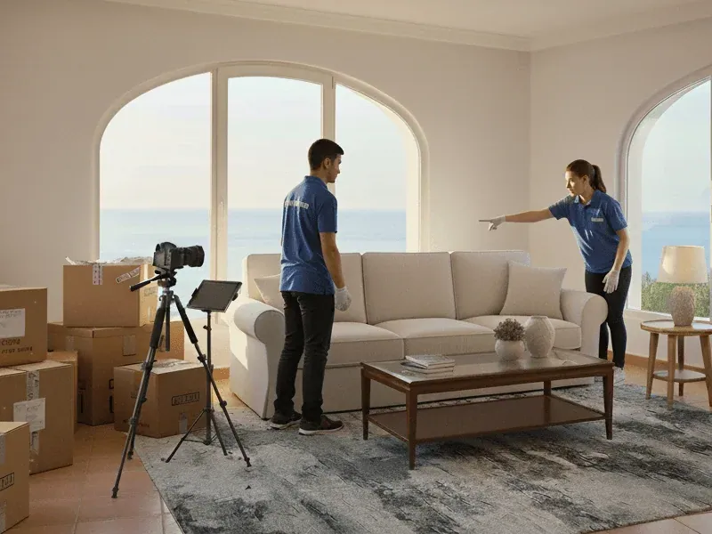

En un mercado como el de Barcelona, donde la demanda supera sistemáticamente la oferta y hay hasta 444 interesados por vivienda en los primeros diez días de publicación, parece que cualquier piso se vende solo. Pero la realidad es más matizada: el 8% de los pisos en venta en Barcelona tarda más de un año en venderse (Idealista). Y la razón principal en la mayoría de esos casos no es el precio ni la ubicación. Es la presentación.
Un piso con muebles ajenos, de décadas anteriores, con objetos personales del anterior propietario o simplemente desordenado genera una primera impresión que ninguna estrategia de marketing puede corregir completamente. Para una inmobiliaria, esto se traduce en visitas menos efectivas, más bajadas de precio y operaciones que se demoran más de lo necesario.
Esta guía explica por qué el vaciado profesional es una de las decisiones más rentables que puede tomar un agente o una agencia antes de publicar un inmueble.
Qué necesita realmente una inmobiliaria de una empresa de vaciado
No es lo mismo lo que necesita un particular que lo que necesita una inmobiliaria o un administrador de fincas. Un profesional del sector necesita algo muy específico:
Rapidez real
Cada día que el piso no puede fotografiarse ni enseñarse es tiempo y dinero perdido. Se necesita que el vaciado se complete en 24–72 horas desde la solicitud, no en "unos días".
Fiabilidad absoluta
Que el trabajo se complete en el plazo acordado, sin llamadas de última hora, sin excusas y sin que el agente tenga que supervisar. Un proveedor que falla obliga al agente a gestionar un problema que no es suyo.
Discreción profesional
Especialmente en herencias o situaciones delicadas. El trabajo se hace sin llamar la atención de los vecinos, sin vehículos llamativos y con respeto por la situación de los propietarios o herederos.
Documentación correcta
Certificado de gestión de residuos de la Agencia de Residuos de Cataluña, factura adaptable al pagador, e inventario fotográfico previo. Sin esa documentación, una herencia o una compraventa puede tener problemas.
Resultado completo
El piso entregado vacío, barrido y sin restos. No "casi vacío". No "hay una habitación que queda pendiente". El agente necesita poder confirmar al propietario que el inmueble está listo.
Un único proveedor
Vaciado, limpieza profunda, pintura básica, pequeñas reparaciones. Coordinar cuatro empresas diferentes para preparar un piso es ineficiente. Un único interlocutor que resuelve todo el proceso es un activo real.

El mercado de Barcelona en 2026 y el papel de la presentación
Barcelona tiene uno de los mercados inmobiliarios más activos de España. En junio de 2025, el precio medio en la ciudad alcanzó los 4.920 € por metro cuadrado, con un aumento interanual del 11,1%. Entre enero y septiembre de 2025 se registraron 55.465 compraventas en la provincia de Barcelona, un +19% interanual según el INE.
Sin embargo, este mercado favorable no elimina el problema de los pisos mal presentados. Los pisos que salen al mercado con un precio superior al 10% de su valor real tardan de media más de 6 meses en venderse y terminan cerrando un 5–8% por debajo del precio que habrían obtenido con un precio correcto desde el inicio, según Idealista Research 2025. Y la percepción del precio está directamente influenciada por la presentación.
Más aún: según datos de Idealista, un 67% de los inmuebles se venden en menos de tres meses en Barcelona, pero un 19% de los pisos se venden en menos de una semana — y esos pisos son los que tienen precio correcto y presentación impecable desde el primer día.
El impacto del home staging y la preparación del inmueble
No todos los pisos necesitan home staging. Pero todos los pisos necesitan estar en condiciones antes de fotografiarse. El orden de prioridades es claro:
- Vaciado: si hay muebles ajenos que no van a la venta, retirarlos es el primer paso
- Limpieza profunda: siempre necesaria, especialmente en pisos que llevan tiempo cerrados
- Pintura y reparaciones básicas: alta relación coste-impacto en pisos deteriorados
- Home staging: si el segmento y el precio lo justifican
- Fotografía profesional: siempre, en cualquier segmento
Según datos de la Asociación de Home Staging de España (ASHE), el 75% de las propiedades se venden en menos de 90 días con preparación, y el 55% en menos de 40 días. En el 41% de los casos se obtiene un aumento en el precio de venta. Y todo esto parte de un piso vacío y en condiciones.
Un piso de 80m² en Barcelona a 4.989 €/m² tiene un valor aproximado de 399.120 €. Cada mes adicional en el mercado supone: hipoteca o coste financiero del activo, IBI, suministros mínimos, y el efecto psicológico de un anuncio "quemado" en los portales. Una inversión de 1.500–2.500 € en vaciado y preparación que acelera la venta en 30–60 días tiene un retorno clarísimo.
Tipos de pisos que requieren vaciado antes de la venta o el alquiler
No todos los encargos de una inmobiliaria son iguales. Estos son los casos más frecuentes en los que el vaciado profesional es imprescindible:
Pisos procedentes de herencia
El caso más frecuente. Los herederos no residen en Barcelona o no tienen tiempo de vaciar. El piso puede llevar meses o años con todos los enseres del fallecido. Sin vaciado, fotografiarlo es imposible y enseñarlo es contraproducente.
Pisos de personas mayores en residencia
El propietario se ha trasladado a una residencia. Sus familiares viven lejos. El contenido tiene décadas de historia acumulada y requiere un manejo especialmente cuidadoso. Los familiares con frecuencia no pueden desplazarse.
Pisos con muebles del anterior propietario
La venta incluye el inmueble, no el contenido. El vendedor no ha completado el vaciado antes de entregar el encargo. Situación habitual cuando el propietario vive en otra ciudad o país.
Pisos cerrados durante años
Inmuebles que llevan tiempo sin usarse: acumulación de objetos, polvo, posible humedad, materiales deteriorados. Necesitan vaciado completo y limpieza profunda antes de poder fotografiarlos.
Cambio de inquilinos urgente
El inquilino saliente dejó muebles o enseres. El nuevo contrato empieza en días o semanas. La inmobiliaria o el administrador necesita resolver el vaciado de lo que quedó en el menor tiempo posible.
Pisos con acumulación severa
Casos de Diógenes, acumulación extrema o simplemente décadas sin revisión. Requieren empresa con protocolo específico, equipamiento de protección y gestión de residuos especiales con certificación.
Por qué el vaciado impacta directamente en la comercialización
El vaciado no es solo retirar muebles. Es la base que permite que todo lo demás funcione: las fotografías, las visitas, la percepción de valor y, en última instancia, el precio y el tiempo de venta.
Fotografías de mayor calidad
Un piso vacío se fotografía mejor. Las habitaciones parecen más grandes, la luz natural circula, y el comprador puede visualizar el espacio. Las fotografías son el primer filtro en Idealista y Fotocasa: si no generan atracción, el piso pierde contactos antes de que alguien lea una línea del anuncio.
Visitas más efectivas
Sin los muebles y objetos de otra persona, el comprador se centra en el inmueble. Las objeciones típicas ("habría que tirar todo esto", "qué cargado está", "no me puedo imaginar cómo quedaría") desaparecen. La visita es más productiva y genera más decisiones de compra.
Menos margen de negociación a la baja
Cuando un piso tiene muebles viejos, acumulación o aspecto deteriorado, el comprador mentalmente "descuenta" el coste de vaciar y limpiar. Un piso vacío y en buen estado elimina ese argumento de negociación y sostiene mejor el precio de salida.
Menos tiempo en el mercado
Los portales inmobiliarios registran y muestran el tiempo de publicación. Un anuncio con semanas de antigüedad genera la percepción de "algo está mal". Un piso que sale al mercado en buenas condiciones genera contactos inmediatos desde el día uno.
Base óptima para home staging
Si la estrategia incluye home staging, trabajar sobre un piso vacío es mucho más económico y efectivo. Según las principales empresas de staging en Barcelona, el coste sobre un piso vacío es entre un 20 y un 40% menor que sobre uno con muebles ajenos que hay que gestionar.
Mejor relación con el propietario
Resolver el vaciado de forma profesional y documentada genera confianza con el propietario o los herederos. Demuestra que la inmobiliaria gestiona el proceso completo, no solo la parte de la venta. Eso se traduce en fidelización y en referencias.
Comparativa: vaciado profesional vs gestión familiar o por cuenta propia
| Factor | Gestión familiar / propia | Empresa de vaciado profesional |
|---|---|---|
| Tiempo hasta piso listo | Semanas o meses | 24–72 horas |
| Disponibilidad urgente | Depende de agendas familiares | Servicio urgente 24h disponible |
| Gestión legal de residuos | Sin certificación | Certificado ARC incluido |
| Inventario documentado | Raramente y sin protocolo | Siempre fotográfico antes de mover |
| Coordinación con inmobiliaria | Compleja, múltiples interlocutores | Un único contacto, respuesta rápida |
| Coste real total | Tiempo + desplazamientos + lucro cesante | Precio cerrado conocido de antemano |
| Objetos de valor / documentos | Riesgo de pérdida o conflicto | Protocolo de identificación y custodia |
| Conflictos entre herederos | Alta probabilidad sin neutralidad | Empresa neutral con documentación para todos |
| Limpieza complementaria | Requiere proveedor adicional | Incluible en el mismo servicio |
| Impacto en tiempo de venta | Ninguno o negativo | Positivo: piso listo para sesión fotográfica inmediata |

Cómo funciona el proceso de colaboración con una inmobiliaria
El proceso está diseñado para ser lo más sencillo posible para el agente o el administrador:
-
Primer contacto y solicitud de valoración
La inmobiliaria nos contacta por teléfono, WhatsApp o email con la dirección del inmueble y una descripción básica (tamaño, planta, contenido aproximado). En menos de 24 horas realizamos visita gratuita para valorar el volumen de trabajo y elaborar el presupuesto cerrado. En casos urgentes, la valoración puede hacerse en el mismo día.
Respuesta inicial: menos de 2 horas en horario de oficina -
Presupuesto cerrado y confirmación
Tras la visita, se emite presupuesto detallado con el alcance exacto del trabajo, el plazo y el precio final. Sin costes ocultos, sin "dependiendo de lo que haya". Si hay objetos con posible valor recuperable, se indica en el presupuesto. La confirmación puede ser por escrito o verbal según el protocolo de la agencia.
-
Acceso al inmueble y inicio del trabajo
La inmobiliaria facilita acceso (llave, código de portal, contacto del portero o propietario). No es necesario que el agente esté presente. Antes de mover nada, se realiza inventario fotográfico completo de todas las estancias. Ese inventario se comparte con la inmobiliaria y, si se solicita, con el propietario o los herederos.
El inventario fotográfico previo es especialmente importante en herencias con varios herederos -
Vaciado, clasificación y gestión de residuos
Retirada completa del contenido del inmueble: muebles, electrodomésticos, ropa, enseres, papeles, residuos. Clasificación de lo que puede donarse (Cáritas, Cruz Roja), venderse (Wallapop) o requiere gestor autorizado. Gestión con certificado de la Agencia de Residuos de Cataluña. Si hay documentos, dinero en efectivo, joyas u objetos de valor, se apartan, se documentan y se notifican inmediatamente.
-
Entrega y documentación
El piso se entrega completamente vacío y barrido. Se facilita: certificado de gestión de residuos de la ARC, fotos del estado final, factura según lo acordado (propietario, agencia o herederos). Plazo típico desde el inicio del trabajo: 1–4 días según el tamaño y contenido.
Piso listo para sesión fotográfica y primeras visitas
Más que vaciado: servicio integral hasta el piso listo para fotografiar
Una de las principales ventajas de trabajar con un único proveedor es evitar la coordinación de múltiples empresas. Además del vaciado, ofrecemos:
| Servicio | Descripción | Tiempo adicional |
|---|---|---|
| Limpieza profunda | Desengrasado cocina, baños, suelos, ventanas. Nivel listo para fotografía profesional | 1 día |
| Desinfección | Tratamiento biocida en superficies. Especialmente en pisos con animales, humedad o larga clausura | Mismo día |
| Ozonización | Eliminación definitiva de olores (tabaco, humedad, cocina). Imprescindible en muchos pisos de herencia | 1 día + ventilación |
| Pintura básica | Mano de pintura blanca en paredes manchadas o con colores muy marcados. Transforma la percepción del espacio | 2–3 días |
| Reparaciones menores | Grifos, enchufes, puertas, persianas. Lo que el comprador nota en la visita y genera objeciones | Integrado |
El servicio más solicitado por las inmobiliarias combina vaciado completo + limpieza profunda + ozonización + limpieza de ventanas. El resultado es un piso listo para la sesión fotográfica sin necesidad de coordinar ningún proveedor adicional. Precio orientativo para piso de 60-80m²: 1.800€–3.200€.
Precios orientativos para inmobiliarias y administradores
| Servicio | Superficie | Contenido | Precio orientativo | Plazo |
|---|---|---|---|---|
| Vaciado básico | 30–50 m² | Moderado | 650€ – 1.200€ | 1 día |
| Vaciado completo | 60–80 m² | Medio-alto | 1.150€ – 2.200€ | 1–2 días |
| Vaciado piso grande | 80–120 m² | Alto | 1.800€ – 3.200€ | 2–3 días |
| Vaciado + limpieza profunda | 60–80 m² | Medio-alto | 1.800€ – 3.500€ | 2–3 días |
| Pack integral (listo fotografía) | 60–80 m² | Medio-alto | 2.200€ – 4.200€ | 3–4 días |
| Servicio urgente 24h | Cualquier | Cualquier | +30–50% sobre base | 24 horas |
Los precios anteriores son orientativos. El coste real depende del contenido específico de cada piso. Siempre realizamos visita de valoración gratuita antes de emitir presupuesto. El precio acordado es el precio final: sin costes adicionales por "más contenido de lo previsto". El riesgo lo asumimos nosotros.
Casos reales de colaboración con inmobiliarias
Caso A: Herencia en el Eixample — encargo de agencia inmobiliaria
Una inmobiliaria recibió el encargo de vender el piso de una herencia. Los tres herederos vivían en diferentes ciudades europeas y no podían desplazarse. El piso llevaba meses cerrado con todo el mobiliario y pertenencias del difunto. Contactaron con nuestro equipo a las 9:00 del lunes. A las 15:00 teníamos la visita de valoración. El martes comenzó el vaciado. El miércoles por la tarde, el piso estaba vacío, limpio y listo para la sesión fotográfica.
Resultado: la agencia publicó el anuncio el jueves con fotografías profesionales. Primera visita el viernes. Oferta de compra aceptada la semana siguiente.
"Habíamos estimado tres semanas para organizar el vaciado con los herederos. En 48 horas estaba resuelto y la operación pudo avanzar sin retrasos." — Agente inmobiliaria, Barcelona 2025
Caso B: Cambio de inquilinos urgente — administrador de fincas, Poblenou
El inquilino saliente dejó dos armarios, una cama, electrodomésticos y varias cajas de objetos personales. El nuevo contrato empezaba en 72 horas. El administrador de fincas necesitaba el piso vacío y limpio para la entrega de llaves. Servicio urgente: el equipo entró el mismo día de la solicitud y completó el vaciado en una jornada. El piso fue entregado en plazo.
"Tenemos VaciadoDePisos.cat en los contactos desde hace dos años. Para cambios de inquilinos urgentes son los únicos que nos garantizan plazos reales." — Administrador de fincas, Barcelona
Caso C: Herencia compleja — cuatro herederos en desacuerdo, Sarrià
Una inmobiliaria tenía el encargo pero el vaciado estaba bloqueado porque los cuatro herederos no se ponían de acuerdo sobre qué conservar. La solución: inventario fotográfico completo compartido digitalmente con los cuatro. Cada heredero indicó qué quería conservar a través de un documento compartido. La empresa ejecutó el acuerdo resultante sin que nadie tuviese que estar presente el mismo día. Desbloqueo total del proceso en 48 horas.
"El inventario fotográfico fue lo que desbloqueó todo. Cada heredero pudo ver el contenido completo y tomar decisiones sin estar presente en el piso." — Inmobiliaria, 2025
VaciadoDePisos.cat: cómo trabajamos con inmobiliarias y administradores de fincas
Somos una empresa local con sede en Sant Pere de Ribes, con cobertura en toda el área metropolitana de Barcelona y la comarca del Garraf. Trabajamos regularmente con agencias y agentes inmobiliarios, administradores de fincas y promotores.
Lo que ofrecemos a los profesionales del sector
- Respuesta en menos de 2 horas en horario de oficina y visita de valoración en el mismo día si hay urgencia
- Presupuesto cerrado tras visita gratuita. Sin sorpresas al final del trabajo
- Inventario fotográfico previo de todo el contenido antes de mover nada
- Protocolo de objetos de valor: cualquier documento, joya, dinero o antigüedad se aparta, documenta y notifica de inmediato
- Servicio urgente en 24 horas para situaciones con plazo muy ajustado
- Certificado de gestión de residuos de la Agencia de Residuos de Cataluña
- Facturación flexible: a nombre del propietario, la agencia, los herederos o cualquier parte que asuma el coste
- Pack integral vaciado + limpieza + ozonización + reparaciones menores con un único proveedor
- Discreción total en el edificio. Trabajo sin molestar a vecinos ni generar situaciones incómodas
Zona de cobertura
¿Tiene un piso que preparar para la venta o el alquiler en Barcelona?
Visita gratuita el mismo día. Presupuesto cerrado en menos de 24 horas. Piso listo para fotografiar en 1–4 días.
Preguntas frecuentes
Las inmobiliarias reciben con frecuencia encargos de pisos con muebles y enseres de anteriores propietarios que no pueden fotografiarse ni enseñarse en ese estado. Gestionar ese vaciado internamente consume tiempo del agente. Externalizar a empresa especializada permite que el inmueble esté listo en 24–72 horas, sin desviar recursos del negocio principal de la agencia.
Un piso estándar de 60–80m² puede vaciarse en 1–2 días de trabajo. Pisos más grandes o con mucho contenido requieren 2–4 días. Para casos con plazos muy ajustados, existe servicio urgente que puede completarse en 24 horas. El proceso completo (valoración, vaciado, limpieza básica, entrega) puede resolverse en 48–72 horas desde el primer contacto.
Para un piso estándar de 60–80m², el vaciado completo suele situarse entre 1.150€ y 2.200€. Combinado con limpieza profunda y preparación básica, entre 1.800€ y 3.500€. Consulte nuestra guía de precios actualizada. Siempre se ofrece valoración gratuita y presupuesto cerrado sin compromiso.
Generalmente sí, especialmente cuando los muebles son viejos o no corresponden al perfil del comprador. Según datos de Idealista, el 67% de los pisos en Barcelona se venden en menos de tres meses, y los pisos bien presentados generan hasta 3,2 veces más visitas que los no preparados. Un piso vacío permite al comprador visualizar su propio proyecto y reduce las objeciones en las visitas.
Inventario fotográfico previo, retirada completa de muebles y enseres, clasificación para donación o reciclaje, gestión legal de residuos con certificado de la ARC, limpieza básica de barrido, y entrega del piso completamente despejado. Servicios adicionales opcionales: limpieza profunda, ozonización, pintura y reparaciones menores.
Sí. La facturación se adapta según lo acordado: a nombre del propietario, de la inmobiliaria como gestora, de los herederos, o de cualquier otra parte. Se emite factura con IVA y certificado de gestión de residuos.
La inmobiliaria facilita acceso al inmueble en la fecha acordada. El equipo trabaja de forma autónoma y entrega el piso en el plazo acordado. No es necesario que el agente esté presente, aunque puede coordinarse si se prefiere. La comunicación puede hacerse íntegramente por WhatsApp con fotos del estado antes y después.
Seguimos un protocolo estricto: cualquier objeto con posible valor (documentos, joyas, dinero, antigüedades) se aparta, documenta fotográficamente y notifica de inmediato. Nada se tira sin haber sido clasificado. En herencias con varios herederos, el inventario fotográfico previo es la garantía para todos.
Sí. Los administradores de fincas son uno de los perfiles más frecuentes, especialmente para cambios de inquilinos urgentes, pisos con acumulación severa o inmuebles que llevan tiempo cerrados. Mismos plazos, documentación y calidad que para agencias inmobiliarias.
En algunos casos sí. Si el piso contiene muebles de calidad, antigüedades, colecciones o electrodomésticos en buen estado, el valor recuperado puede compensar parcial o totalmente el coste. Cada caso se estudia en la visita de valoración. Consulte nuestra guía sobre cuándo el vaciado puede ser gratuito.
Sí. Además del vaciado, ofrecemos limpieza profunda, desinfección, ozonización (para olores), pintura básica y reparaciones menores. Un único proveedor para todo el proceso reduce coordinación y tiempo para la inmobiliaria. El pack más solicitado incluye vaciado + limpieza + ozonización, con el piso listo para fotografiar en 48–72 horas.
Conclusión: el vaciado como primer paso de cualquier estrategia inmobiliaria
En el mercado de Barcelona de 2026, donde la demanda es alta pero la competencia también lo es, la presentación del inmueble es el factor que más directamente controla un agente inmobiliario. El precio lo fija el mercado. La ubicación está dada. Pero el estado del piso el día de la sesión fotográfica y el día de las visitas es algo sobre lo que la inmobiliaria puede actuar.
Un vaciado profesional resuelve en 24–72 horas lo que de otro modo podría bloquear una operación durante semanas. No es un coste: es una inversión que acelera el tiempo de venta, reduce las objeciones en las visitas y sostiene mejor el precio de salida.
Si tiene un encargo que necesita preparación, nuestro equipo está disponible para una visita de valoración el mismo día.